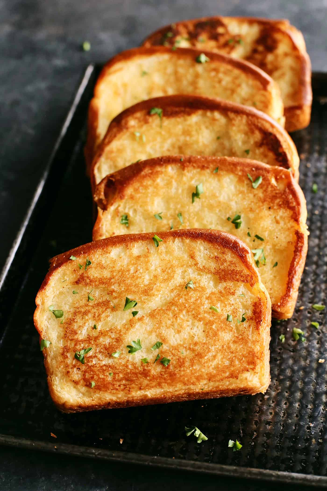

Despite the implications in its name, Texas toast is not sold toasted, but is instead a packaged, sliced bread, characterized by its thickness (twice the thickness of most sliced and packaged bread). It is most commonly used for dishes such as French toast, and others which incorporate heavy substances like sauces and syrups.
Meal prep time : 22 minutes
Servings : 16